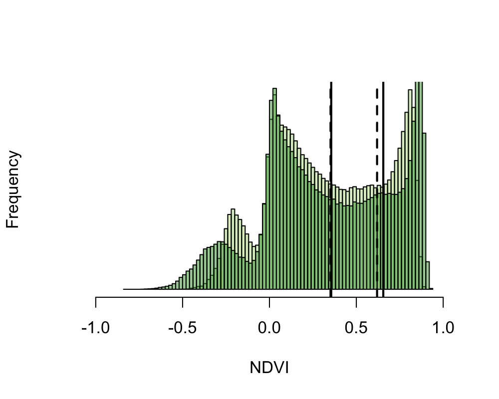
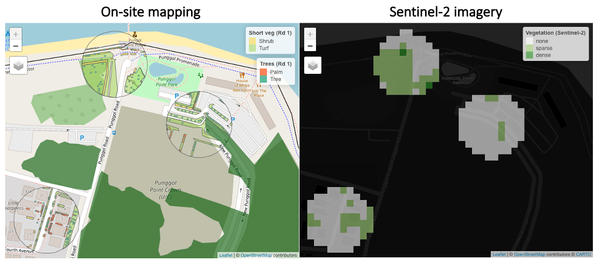
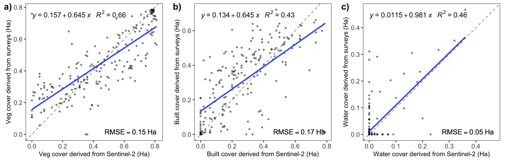

Image by Alexey Topolyanskiy from Unsplash
Image by Alexey Topolyanskiy from Unsplash
As part of a research project to develop biodiversity indices for city planning, I’ve had to quantify different components of the landscape using satellite data. One of these components is land cover, from which other metrics can be further derived. So far, this has been done for Sentinel-2 and Skysat data. Here is a brief summary of the steps and template R code used to derive land cover classes from publicly-available Sentinel-2 imagery. We’re open to collaborate and explore new applications in remote sensing, so we’d love to hear from you if you have any feedback or ideas!
First off, let’s load the required R packages:
library(tidyverse)
# sentinel-2 data
library(sen2r)
# image processing
library(EBImage)
# spatial analysis
library(terra)And here’s the raw shape file for our area of interest:
.](https://xp-song.github.io/posts/city-landcover-change/index_files/figure-html/unnamed-chunk-3-1.png)
Figure 1: Singapore subzone boundaries based on the Master Plan 2019.
Calculate spectral indices
To download Sentinel-2 images, we can use the R package sen2r to programatically download the satellite data within a specified date range. It also allows us to run pre-processing steps such as cloud masking, atmospheric correction and the calculation of spectral indices.
# get search parameters
json_path <- "<PATH TO YOUR JSON FILE>"
# you can create this file by running 'sen2r()', then using the graphical user interface to specify & save your parameters (e.g. max cloud cover per image, etc.)
# download
out_paths <- sen2r(
param_list = json_path,
extent_as_mask = TRUE, # mask the image based on your supplied shape file
list_rgb = "RGB432B" # output RGB image
)
rm(json_path)For each data type (e.g. spectral index), we can combine all raster images captured within the specified date range by averaging the pixel values across files (thus forming an image mosaic). This allows us to avoid relying on any one image for our analysis, and to deal with missing data (e.g. due to high cloud cover) during the period of interest. Depending on the data type, we can scale the values and remove outliers prior to forming the image mosaic. You might also want to consider parallelising the code if there are many files. Run the following code for each data type:
filepaths <- "<PATHS TO YOUR PROCESSED FILES>"
images <- lapply(filepaths, rast) # import rasters as a list
mosaic <- do.call(terra::mosaic, c(images, list(fun = "mean")))
# export mosaic
writeRaster(mosaic, "<MOSAIC FILE NAME>.tif",
wopt = list(gdal=c("COMPRESS=LZW")), # compress output
overwrite = TRUE)Classify land cover
At this point, we have a single image mosaic (raster) for each spectral index. While the continuous values from these rasters may be used directly in analyses, there may be instances were we want to work with discrete classes of land cover. One method is to separate pixels into one of two classes (e.g. vegetated or non-vegetated; water or land), based on an adaptively derived threshold value. For example, we use Otsu’s thresholding (Otsu, 1979), which tends to outperform other techniques in terms of stability of results and processing speed, even with the presence of > 2 peaks in the histogram of pixel values (Bouhennache et al., 2019; see figure below). This may be implemented using the otsu() function in library(EBImage):
threshold_value <- EBImage::otsu(mosaic,
range = c(-1, 1), # histogram range
levels = 256) # depends on image bit-depth
classified <- mosaic # duplicate
classified[mosaic < threshold_value] <- 0 # assign value of 0 for pixels below threshold (e.g. non-vegetated)
classified[mosaic >= threshold_value] <- 1 # assign value of 1 for pixels above threshold (e.g. vegetated)As an example, the following figure shows the distribution of the Normalized Difference Vegetation Index (NDVI) values of a raster image. The NDVI is a measure of healthy green vegetation, based on the tendency of plants to reflect NIR & absorb red light. It ranges from -1 (non-vegetated) to 1 (densely vegetated). Pixels that fall within the range of different threshold values (vertical lines) may be classified into discrete land cover types. If we do this for multiple date ranges, we can examine differences between the two. For example, in our project, we are currently comparing image mosaics captured during 2016–20191 (Survey Round One) and those captured during 2019-20222 (Survey Round Two; ongoing). Each spectral index can be processed in different ways, and often have different threshold values if they are used for land classification. For example, there are numerous other vegetation indices (e.g. NDRE, ARVI), as well as spectral indices used to classify water (e.g. NDWI) and built (e.g. NDBI) cover.

Figure 2: Distribution of NDVI values across Singapore in Survey Round One (light green bars, dashed vertical lines) and Two (dark green bars, solid vertical lines). Vegetation was classified as pixel with values > 0.35 for Round One and > 0.36 for Round Two. Dense vegetation was classified as pixels with values > 0.62 for Round One and > 0.66 for Round Two, based on a second round of Otsu’s thresholding after the first round of classification.
Accuracy assessments
How do we know that the land cover classes we have derived are accurate? Some form of ground-truthing is required. In our project, on-site mapping has been performed at sampling points by Justin Nai, Edwin Tan and other team members over the years.

Figure 3: Screenshot showing vegetation derived from on-site surveys and satellite imagery at sampling points in Punggol, Singapore.
The next figure shows a comparison of land cover area between surveyed (x-axes) and satellite (y-axes) data. As we can see, there are positive relationships between the two (particularly for vegetation cover), but the relatively large root-mean-square errors (RMSE) show that low resolution satellite imagery does have its limitations.

Figure 4: Area of (a) vegetation, (b) built and (c) water cover derived from Sentinel-2 compared with on-site surveys at sampling points.
Summarise per zone
Now that we have land cover classified during different periods of time, one way to compare differences in land cover is to summarise them according to the zones used in city planning. Spectral indices (whether classified or not) can be summarised within each zone, to allow comparisons to be made between these planning units.
Here’s a map showing the proportional area and change in the basic types of land cover within municipal subzones in Singapore. The image quality, NDVI and classified vegetation for both survey rounds are also viewable. Note that the reported amount of NA pixels have been scaled up substantially (×1015) for the purpose of visualisation, so the image quality is actually pretty good (i.e. low cloud cover)! This means that differences between survey rounds are unlikely to be due to differences in image quality. You may toggle the visibility of the different layers within the map.
Based on this comparison of satellite image mosaics captured during 2016–2019 (Survey Round One) and 2019-2020 (Survey Round Two), we find that:
- Sparse vegetation increased within the Central Water Catchment and offshore islands. However, dense vegetation decreased substantially within these areas too.
- Water cover at the eastern (North Eastern Islands) and western (Tuas View Extension) tips of Singapore decreased, but increased at north-western areas, Jurong Island and the Central Water Catchment.
- Built cover decreased substantially within Jurong Island and along the south-western coast of Singapore.
What could have resulted in these land cover changes during this period of time? What other interesting patterns do you see? Feel free to reach out to us if you are interested to collaborate (P.S. We are also hiring!).
This post is also shared on R-bloggers.com.